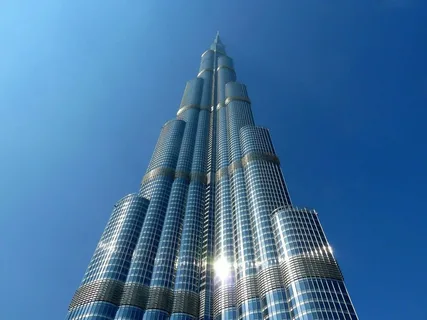

The Great Britain
Биг-Бен появился в ансамбле Вестминстерского дворца относительно недавно. Архитектор Чарльз Бэрри проводил реставрацию здания парламента и решил перестроить имевшуюся там часовую башню. Деньги под это мероприятие выделили с одним условием: часы должны быть самыми точными, а колокольный звон слышным на всех улицах и площадях города. Своему дизайну башня обязана известному мастеру готического стиля Огастесу Пьюджину. Так, в 1859 году был построен самый узнаваемый символ Лондона, увидеть который считает своим долгом каждый гость столицы. Виды на Биг-Бен прекрасны в любое время года, а фотографии с его изображением есть у каждого гостя города. В свете ночных фонарей башня выглядит таинственным стражем, который пристально наблюдает за округой. Остается вопрос, почему Биг-Бен так называют? В переводе это означает «большой Бен». Большинство склонны считать, что колокол названв честь Бенджамина Холла — члена парламента, во время скучной речи которого и поступило шуточное предложение увековечить его имя; любители спорта предпочитают верить в то, что имя Бенджамин относится к известному боксеру. В любом случае, башня и колокол давно превзошли своих тезок по известности и популярности. Сегодня она официально называется «Башней Елизаветы» в честь годовщины правления действующей королевы, который отмечался в 2012 году.

The United Arab Emirates
Высочайшее здание, построенное на Земле, находится в центре Дубая. Это башня Бурдж-Халифа. Окружённая другими небоскребами, башня является доминантой делового центра Дубая и одним из символов всех Арабских Эмиратов. Высота башни Бурдж-Халифа 828 метров, из которых 180 метров - это самый длинный шпиль в мире. Для сравнения, высота Останкинской телебашни 540 метров. Строительство башни началось в 2004 году. На возведение потратили около 1,5 млрд долларов. Изначально она называлась «Бурдж-Дубай» (Дубайская башня). А в 2010 году переименовали в Башню Халифа, посвятив здание президенту ОАЭ шейху Халифе ибн Заиду Аль Нахайяну. Асимметричная форма здания призвана исключить раскачивание от ветра. А облицовка фасада специальным стеклом сокращает поглощение солнечных лучей и нагрев внутренних помещений. Чтобы помыть всю стеклянную поверхность требуется около 3 месяцев.
Belarus
Национальная библиотека Беларуси – это современный социально-культурный центр, не имеющий аналогов во всей стране. Здание библиотеки – одно из самых уникальных архитектурных городских объектов, привлекающих путешественников со всего мира. Национальная минская библиотека открыта с 1922 года, но в 2002 библиотеку переместили в новое здание. В народе его назвали «Алмаз знаний», так как здание имеет форму ромбокубоктаэдра – полуправильного многогранника, стоящего на многоуровневой подставке. Архитекторы проекта – М. Виноградов и В. Крамаренко – выбрали форму алмаза, так как он символизирует такие ценности, как культура, знания и мудрость. От столь невероятной архитектурной идеи до ее воплощения прошло целых тринадцать лет!

France
Бесспорно, что все достопримечательности Франции уступают Эйфелевой башне по высоте, посещаемости и красоте. Но и столь уникальной историей обладает далеко не каждое здание. Изначально башня создавалась всего лишь как временное сооружение, так как должна была служить входной аркой для Всемирной выставки в Париже 1889 года. Через 20 лет после выставки башню планировали снести, но ее совершенно случайно спасли радиоантенны, которые украшали самый ее верх. Создателем проекта и руководителем строительства Эйфелевой башни был конструктор Гюстав Эйфель. Она была возведена в рекордно короткие сроки: строительные работы велись в течение 2-х лет и 2-х месяцев, и выполняли их сразу 300 рабочих.
Italy
Пизанская башня - одна из самых знаменитых архитектурных достопримечательностей не только в Италии, но и в мире. Она является частью комплекса религиозных зданий, расположенного на Площади Чудес (Piazza dei Miracoli) в итальянском городе Пизе. Комплекс состоит из четырех зданий: кафедрального собора, баптистерия, склепа и самой башни. Строительство этого архитектурного ансамбля было задумано, чтобы подчеркнуть мощь Пизанской республики, являвшейся в XII веке первой морской державой на территории современной Италии.